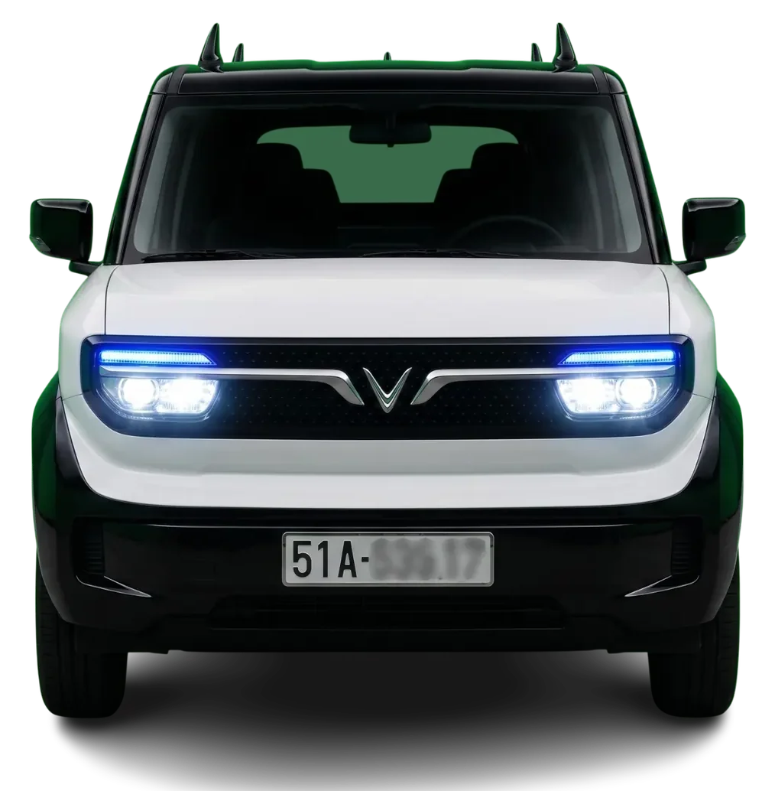
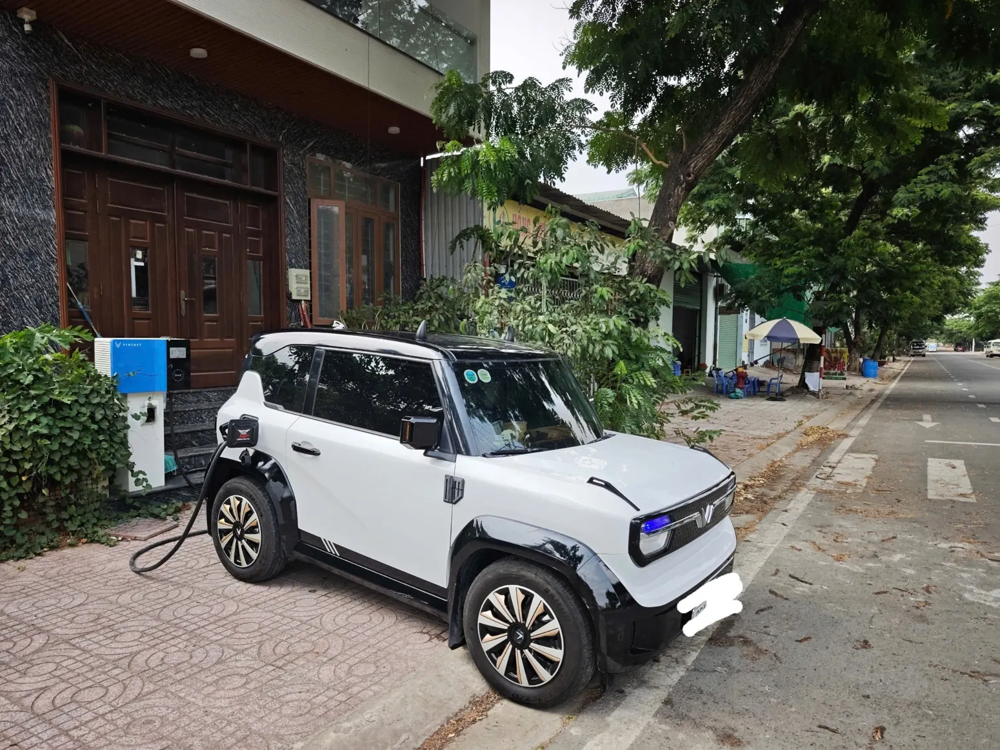

◈
Samsung DeX
14 inch 2K
Màn hình độ phân giải cao, SIM 4G, YouTube Premium và Vietmap Live hỗ trợ giải trí, dẫn đường.
MỞ RỘNG TRẢI NGHIỆM TRONG CABIN ↗
Không chỉ là VF3 nguyên bản: màn hình Samsung DeX 14” 2K, âm thanh JBL + Sub DLS, ghế Nappa và phuộc KYB. Thuê một chiếc xe gọn cho phố, nhưng đủ khác biệt cho cả chuyến đi.

Không cần đoán xe ngoài đời như thế nào. Chọn từng góc ảnh để xem chiếc VF3 màu trắng mà bạn quan tâm.

ẢNH XE THỰC TẾTrải nghiệm công nghệ, âm thanh và sự êm ái được nâng cấp cho chính chiếc VF3 này.
Khám phá bản độ ↗Không phải thêm option cho đẹp ảnh: đây là những trang bị bạn có thể trải nghiệm khi thuê xe.
Màn hình độ phân giải cao, SIM 4G, YouTube Premium và Vietmap Live hỗ trợ giải trí, dẫn đường.
Hệ thống loa và sub nâng cấp kết hợp cách âm SIP/STP ở cửa xe, giúp trải nghiệm âm thanh tốt hơn.
Ghế bọc da Nappa, thảm tràn viền Huvi và phuộc KYB nâng cấp theo hướng êm ái, thoải mái hơn.
Đèn nâng cấp, kính phủ Nano Ceramic và thêm không gian chứa đồ tiện dụng.
Muốn xem xe kỹ hơn trước khi quyết định?
Xem video xe thật ↗Những clip VF3 bạn đã cung cấp, giữ nguyên nội dung. Chạm hoặc bấm để mở video lớn có điều khiển và toàn màn hình.
Giữ nguyên 3 video YouTube mà bạn đã gắn trong trang VF3 cũ. Video chỉ tải khi bấm để website nhẹ hơn.
Mở lịch Google Calendar đang sử dụng cho VF3. Nếu bạn cần ngày/giờ cụ thể, hãy gửi yêu cầu để Thuận hoặc Ngọc xác nhận trực tiếp.
Đừng mất thời gian nhắn qua lại để hỏi thông tin ban đầu. Điền nhanh ngày nhận, ngày trả và nơi nhận xe, hệ thống sẽ soạn sẵn tin nhắn để bạn gửi Thuận hoặc Ngọc qua Zalo.
Những quy định và khoản phụ phí được giữ từ trang VF3 cũ để bạn dễ đối chiếu trước khi thuê. Vui lòng xác nhận lại khi chốt đơn.
Thông tin được kế thừa từ trang VF3 bạn cung cấp, không phải báo giá tự động. Khi xác nhận đơn, hai bên thống nhất điều kiện áp dụng cụ thể.
Xem xe thật, chọn lịch phù hợp rồi liên hệ để kiểm tra và xác nhận nhanh.
Ngoài VF3 VIP, Thuê VF3 Click còn có dịch vụ xe hoa và xe sự kiện theo nhu cầu.
Đến trang xe hoa ↗